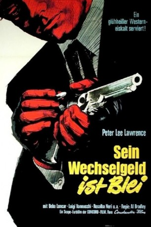

#10478 Sein Wechselgeld ist Blei
 
 IMDB-Wertung: 5.7 / 10
IMDB-Wertung: 5.7 / 10  Metascore: 0
Metascore: 0 
Während des amerikanischen Bürgerkriegs fühlen sich die Brüder Johs und Hank durch die beiden Töchter des Farmers Evans zur Verteidigung von dessen Farm verpflichtet. Als Hank von Nordstaatlern erschossen wird, sinnt Johs nach Rache. Er schließt sich einer Guerillagang an und sieht sich gezwungen unterzutauchen, als ein Kopfgeld auf ihn ausgesetzt wird. Nach Kriegsende kehrt er zurück und muss feststellen, dass sein Herzblatt, Evans' Tochter Christine, einen Neuen hat. Und bei dem handelt es sich ausgerechnet um den Mörder Hanks.
Jahr: 1967
Dauer: 103 Minuten
FSK: 12
Land: Italien Studio: Constantin FilmTonspuren:
Untertitel: Deutsch,
Auflösung: 1080p (1920x824) Größe: 6717 MB
Genre: Western
Regisseur: Alfonso Brescia
Drehbuch: Mario Amendola, Antonio Boccaci, Gian Luigi Buzzi, Paolo Lombardo
Soundtrack: Bruno Nicolai
Darsteller:
- Peter Lee Lawrence als Johs Lee
- Beba Loncar als Christine Evans
 Nello Pazzafini als Butch
Nello Pazzafini als Butch- Rosalba Neri als Lizzy
 Romano Puppo als Clell
Romano Puppo als Clell- Bruna Beani als
 Lina Franchi als Saloon Girl (uncredited)
Lina Franchi als Saloon Girl (uncredited) Renzo Pevarello als Soldier (uncredited)
Renzo Pevarello als Soldier (uncredited)- Luigi Vannucchi als Capt. Dan Clifford
- Andrea Bosic als Mr. Evans
- Lucio Rosato als Hank Stone
- Gianni Solaro als Man from Boston
- Adalberto Rossetti als
- Claudio Trionfi als
- Gloria Selva als Jenny
- Harold Bradley als Nathan
- Bruno Ariè als Soldier Shot on Coach (uncredited)
- Arnaldo Dell'Acqua als Soldier (uncredited)
- Gilberto Galimberti als Butch Henchman (uncredited)
- Riccardo Petrazzi als Soldier (uncredited)
- Claudio Ruffini als Butch Henchman (uncredited)
- Bruno Ukmar als Sergeant (uncredited)
- Rinaldo Zamperla als Soldier (uncredited)
Datei: X:\HD-Western-1960-1979\Sein Wechselgeld ist Blei (1967, FSK12, 1920x824).mkv seit 11.01.2019
Festplatte: HD Eastern+Western
 Es gibt insgesamt 110 Filme in der Gruppe 'HD-Western-1960-1979'
Es gibt insgesamt 110 Filme in der Gruppe 'HD-Western-1960-1979'